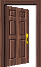
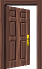

 [Borders/non-borders]
 [Ecologies]
[Ecologies]
 [Ontologies, time]
[Ontologies, time]
 [Pattern, process, archive]
[Pattern, process, archive]
In The Mystic Spiral, Jill Purce likens time itself to the spiral— a symbol that denotes the flow of energy, growth, motion, and universality. She writes, “…the world materializes and man spiritualizes.”
What systems place us within the spiral of time and place? How do these systems expand or limit one’s experience of the world?
3.5 billion years ago, cyanobacteria evolved from inorganic matter and began to produce the oxygen in Earth’s atmosphere. The spiral, in a sense, is inherent to the very metabolic functions of human life. This process of respiration is the gaseous exchange between interior and exterior worlds. To breathe is to create a relationship between the body and space. “Spira” is Latin for coil.
The following is an annotated bibliography for Inherited Histories, a project I began in January, 2021, under the guidance of Mindy Seu.
 [Borders/non-borders]
[Ecologies]
[Ontologies, time]
[Pattern, process, archive]
| Author | Title | Annotation |
|---|---|---|
| Karen Barad | What is the Measure of Nothingness | |
| Octavia Butler and Samuel Delany | Reading Hypertext | |
| Theresa Hak Kyung Cha | Dictee | |
| Donna J. Haraway | Staying With the Trouble | |
| Saidiya Hartman | On Working With Archive, interview with the Creative Independent | |
| Cathy Park Hong | Minor Feelings | |
| Ursula K. Le Guin | Carrier Bag Theory of Fiction | |
| Lynn Margulis | Symbiotic Planet | |
| Don Mee Choi | DMZ Colony | |
| Trinh T. Minh Ha | The Fourth Dimension (from The Digital Media Event) | |
| Trinh T. Minh Ha | Grandma's Story, from Woman, Native, Other | |
| Fred Moten | Undercommons and Utopia | |
| Steyerl, Hito | A Tank on a Pedestal: Museums in an Age of Planetary Civil War | |
| Anna Tsing | Mushroom at the End of the World | |
| Author | Title | Annotation |
|---|---|---|
| Trinh T. Minh Ha | The Fourth Dimension | |
| Kameelah Janan Rasheed & Chang Yuchen | Pattern Recognition | |
| Author | Title | Annotation |
|---|---|---|
| name | The Fourth Dimension | |
| name | Pattern Recognition | |